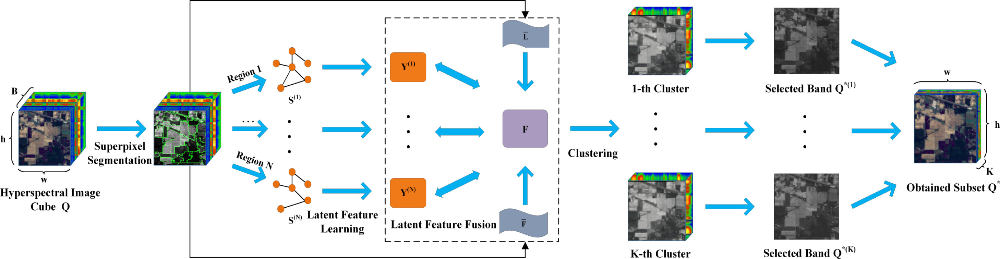
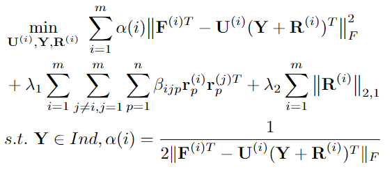

Zhenglai Li (李正来)
GitHub / Google Scholar / Email: yuezhenguan@cug.edu.cn
I am a PhD student in School of Computer Science, China University of Geosciences, Wuhan (CUG) since 2021, supervised by Prof. Chang Tang. Previously, I received B.S. and M.S. from China University of Geosciences, Wuhan, in 2018 and 2021, respectively. My research interests include multi-view clustering, remote sensing change detection.
News
Publications
(* indicates equal contribution)


Information Fusion, 2021 [paper]
Hyperspectral Band Selection via Region-aware Latent Features Fusion based Clustering
Jun Wang, Chang Tang, Zhenglai Li, Xinwang Liu, Wei Zhang, En Zhu, Lizhe WangInformation Fusion, 2021 [paper]

Neurocomputing, 2019 [paper]
Diversity and Consistency Learning Guided Spectral Embedding for Multi-view Clustering
Zhenglai Li, Chang Tang, Jiajia Chen, Cheng Wan, Weiqing Yan, Xinwang LiuNeurocomputing, 2019 [paper]
Professional Activities
Journal Reviewer of IEEE Transactions on Multimedia, information Science.